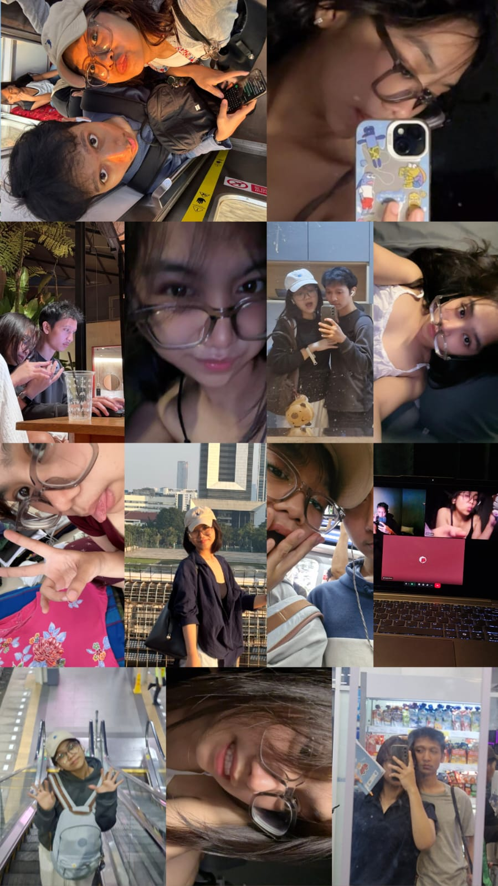

✦
✦

happy birthday dut
21 anjay,
udah gede.
selamat ulang tahun yaa dut. 21 aja wo, nggak kerasa. semoga km sehat terus, ketemu banyak hal baik, dan ketawanya jangan pelit-pelit. kalau capek bilang, jangan sok kuat sendiri. ak ada kok. y g?
catatan dikitumur 21
umur 21
tuh gimana si?
- 01udah boleh nyoblos. jadi suara km resmi dihitung, bukan cuma “terserah”.
- 02secara aturan di Indonesia, udah boleh minum minuman beralkohol. tapi air putih dlu gendut.
- 03udah cukup gede buat bikin keputusan sendiri. tapi kalau bingung makan apa, ya tetep aku tanyain.
- 04bisa bilang “aku udah dewasa” dengan yakin, lalu tetap tidur siang. balance namanya.